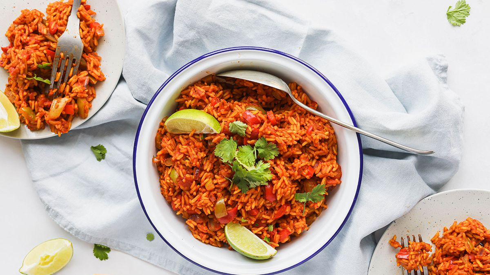

Description
This is a simple recipe that can be made in under an hour.
The recipe requires very little preparation and can be altered to the taste of the person making it or the people who will be eating this dish. It is simple enough that inexperienced people can make the dish.
The rice is best served with a meat accompaniment.
Ingredients
- 2 cups rice
- 1 red onion
- 2 tomatoes
- 4 cloves garlic
- parsley
- 1 tea spoon turmeric
- 2 teaspoons paprika
- 1 bay leaf
- Olive oil
- 1 tea spoon Salt
- 2-3 cups Water
- 2 chillies
- 2 capsicums of different colours
- 50ml white vinegar
- Two tablespoons soy sauce
Steps
- Chop the onions into half circles
- Pour the Olive oil into a pot
- Put the onions in the pot with olive oil
- Fry the chillies for a few minutes
- Cut the tomatoes, garlic, parsley and mix together with vinegar and soy sauce
- Fry the onions until golden brown
- Place the cut vegetables into the frying onions and fry until the tomatoes are soft
- Add the spices and salt
- Place the rice into the pot and fry until it starts sticking to the pot the add water and stir until all the rice has become unstuck from the bottom of the pot
- Lower the heat and allow to simmer